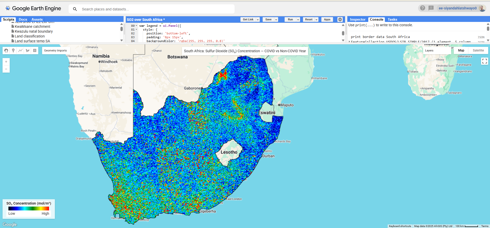

My Projects
Project 1: Water Body Visualization and Streamflow Delineation

The elevation of Mzingazi lakee with Streams flowing towards the lake.
Project 2: Mzingazi Catchment Analysis

Analyzed Mzingazi Lake catchment using ArcGIS Pro and DEM data for hydrological modeling.
Project 3: Mapping groundwater levels relative to stream flow in Richards Bay

Combined groundwater and stream data in ArcGIS Pro to study interactions between surface water and groundwater, highlighting areas of recharge, discharge, and potential resource vulnerabilities.
Project 4: Mapping changes in Mzingazi Lake surface area:s

: Monitored seasonal and inter-annual changes in Mzingazi Lake using Sentinel-2 satellite imagery in Google Earth Engine to analyze fluctuations in surface water extent and identify patterns related to rainfall, land use, and industrial activities.
Project 5: Landcover mapping in Richards Bay:

Produced a high-resolution land use and land cover map using GIS techniques and ESRI datasets, analyzing vegetation, urban areas, and water bodies to support environmental planning and management.
Project 6: 3D elevation map of the White and Black Mfolozi rivers

Created a detailed 3D elevation and slope map using DEM data in ArcGIS Pro to study river intersections and flow patterns toward the ocean, supporting flood and catchment analysis.
Project 7: Mapping Suspended Particulate Matter (SPM) in Mzingazi Lake

Generated seasonal SPM maps using Sentinel-2 imagery and remote sensing techniques to identify areas of high sedimentation and assess potential pollution sources affecting water quality.
Project 8:Groundwater level mapping with contour lines:

Interpolated groundwater levels from borehole data to create contour maps, providing spatial insights into aquifer recharge, flow patterns, and potential water resource management challenges
Project 9: Mapping Chlorophyll-a concentrations in Mzingazi Lake:

Analyzed Chlorophyll-a levels to monitor nutrient enrichment and potential algal blooms, providing insights into water quality dynamics and ecological health over time.
Project 10: Mapping SO₂ levels across South Africa before COVID-19

Mpumalanga (around eMalahleni and Secunda) — this is South Africa’s main coal-mining and power generation hub, home to several Eskom coal-fired power stations and Sasol’s petrochemical complex. These industries emit large amounts of sulfur dioxide during coal combustion and fuel processing. Vaal Triangle area (around Johannesburg–Vereeniging–Sasolburg) — another industrial zone with refineries, steel plants, and power stations, contributing to high SO₂ emissions.
Project 2: Mapping SO₂ levels across South Africa during COVID-19
Used satellite data to monitor variations in sulfur dioxide emissions during the COVID-19 lockdown, highlighting reductions in industrial pollution.